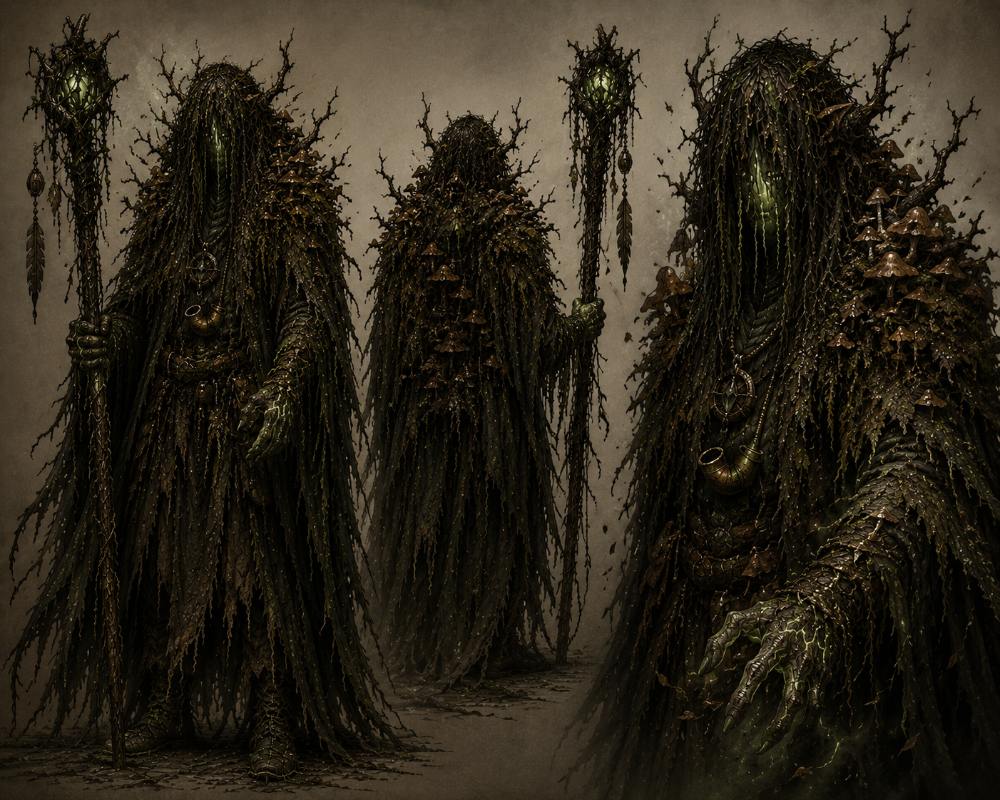

0
Força
Capacidade física comum, sem foco em combate corpo a corpo direto.
Códice de Elyndrath
O Que Ainda Escuta
Guardião da antiga tradição druídica, Bran percorre uma terra em decadência para preservar a memória da floresta e compreender por que ela começou a perder a própria voz.
Origem
Bran nasceu durante os últimos anos do reinado de Aelorian e ainda conheceu, quando criança, uma Elyndrath onde a natureza vivia em equilíbrio com os antigos espíritos.
Foi criado em um dos últimos círculos druídicos sobreviventes da guerra civil, aprendendo os ensinamentos preservados pela tradição de Vaelor. Sua jornada não busca glória nem poder; busca preservar a memória da antiga floresta e entender aquilo que nem os antigos druidas foram capazes de explicar.
Atributos
A força de Bran não está na imposição física, mas na percepção do ciclo natural, na inteligência arcana e na sabedoria profunda de quem aprendeu a tratar a floresta como uma consciência viva.
0
Capacidade física comum, sem foco em combate corpo a corpo direto.
9
Movimento leve, precisão e adaptação ao terreno natural.
10
Resistência suficiente para longas jornadas e exposição à natureza corrompida.
20
Análise, investigação e compreensão das anomalias que ferem Elyndrath.
30
Conhecimento do mundo, magia druídica e leitura dos antigos sinais da floresta.
-5
Presença reservada, introspectiva e distante das convenções sociais.
Filosofia
Bran prefere compreender antes de agir. Onde outros veem monstros, ele tenta descobrir o que aquela criatura foi antes da corrupção.
Ela não é boa nem má, não julga e não obedece a uma moral humana.
Nada existe isoladamente; cada ser é parte de um mesmo ciclo antigo.
O fim não é negação do ciclo, mas uma passagem necessária para que ele continue.
Ela não participa do ciclo natural; interrompe, deforma e silencia a realidade.
Conjuração
Bran jamais lança feitiços de forma convencional. Quando raízes prendem um inimigo, ele acredita que foi a floresta quem decidiu ajudá-lo.
Quando plantas crescem ou uma cura acontece, ele entende que a natureza apenas respondeu ao seu chamado. Toda sua magia possui aparência orgânica, utilizando raízes, musgos, fungos, cipós, folhas e madeira viva.
Transformações Animais
As transformações não são apenas formas físicas. Cada uma manifesta um aspecto espiritual da natureza e é usada de acordo com necessidade, intenção e significado.
I
Memória, presságios e observação.
Usado para exploração, reconhecimento e para acompanhar acontecimentos à distância.
II
Sabedoria, silêncio e paciência.
Usada quando Bran precisa observar sem ser percebido ou interpretar sinais da natureza.
III
Proteção, união e lealdade.
Sua forma de combate mais equilibrada, simbolizando o guardião da floresta.
IV
Equilíbrio, jornada e liberdade.
Usado para viagens longas e deslocamentos rápidos pela floresta.
V
Resistência, força e persistência.
Surge apenas quando toda tentativa de evitar um confronto já falhou.
Mesmo transformado, Bran permanece consciente e calmo. Nunca é uma transformação motivada por raiva.
O Despertar Verde
O Despertar Verde não é uma transformação em animal nem uma magia específica. É um estado de comunhão absoluta entre Bran e a própria floresta.
Nesse momento, ele deixa de apenas pedir ajuda à natureza e passa a servir como um receptáculo temporário de sua vontade. Raízes crescem sobre seu corpo, musgos e líquens cobrem sua pele, cogumelos brotam entre as vestes, galhos surgem como extensões naturais e seus olhos tornam-se completamente verdes.
Quanto mais profundamente entra nesse estado, mais calmo ele se torna. A presença é intimidadora, mas não por agressividade. É como se sua individualidade desaparecesse por instantes.
Cada uso torna as vozes, memórias e ecos dos antigos espíritos mais presentes, dificultando distinguir onde termina sua consciência e onde começa a consciência ancestral da floresta.
Em Uma Frase
Galeria

